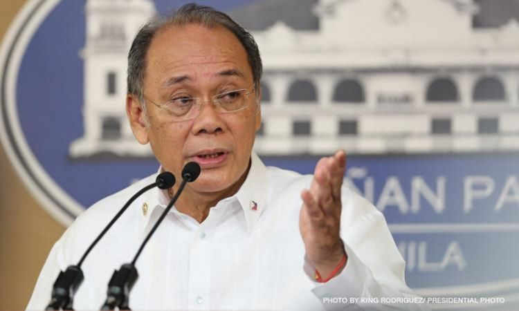
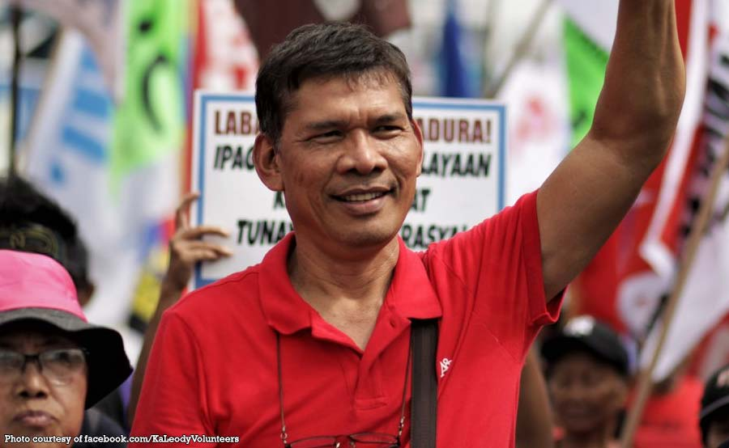
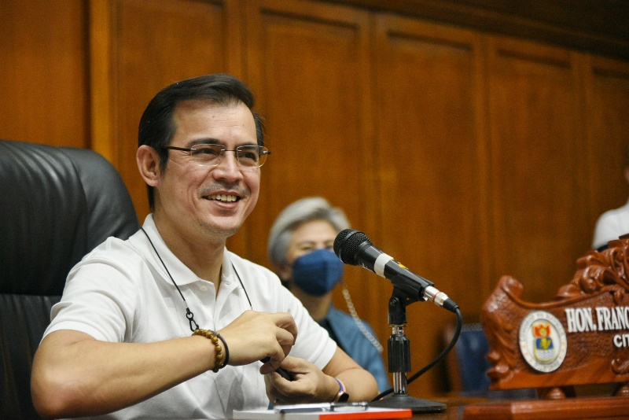
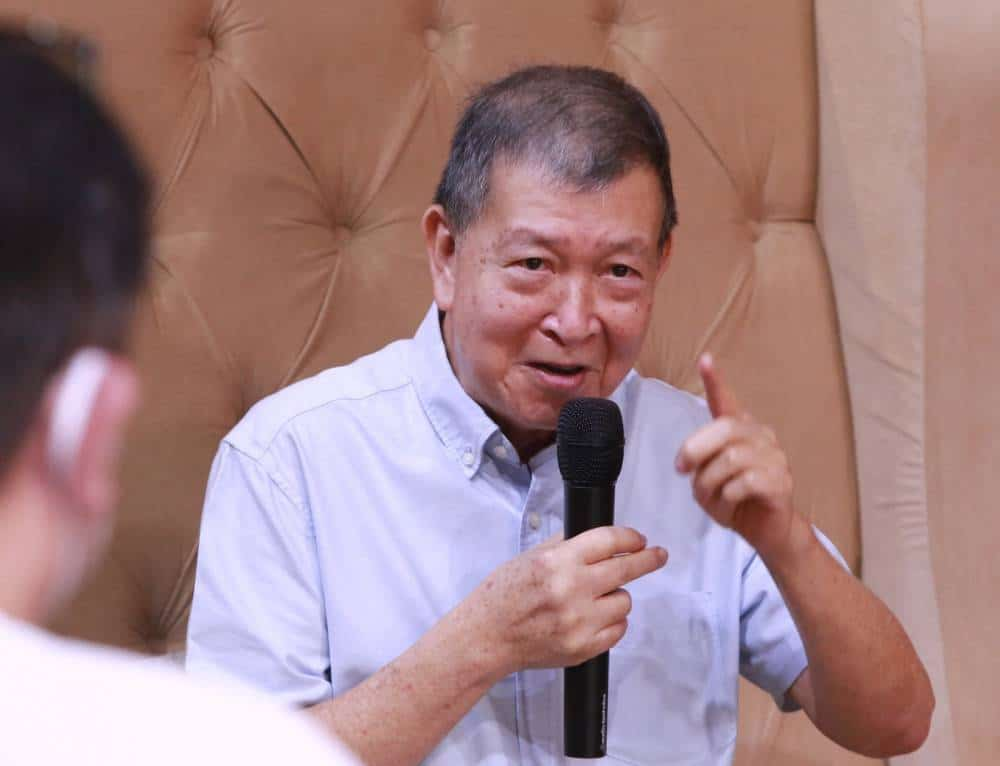
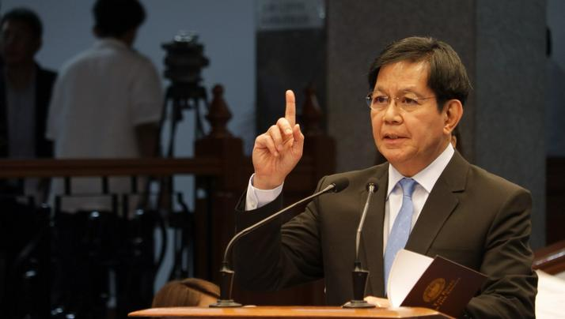
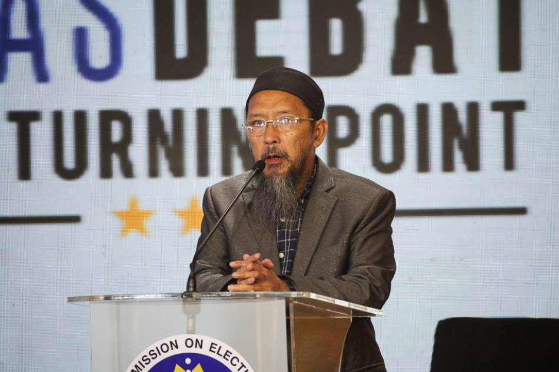
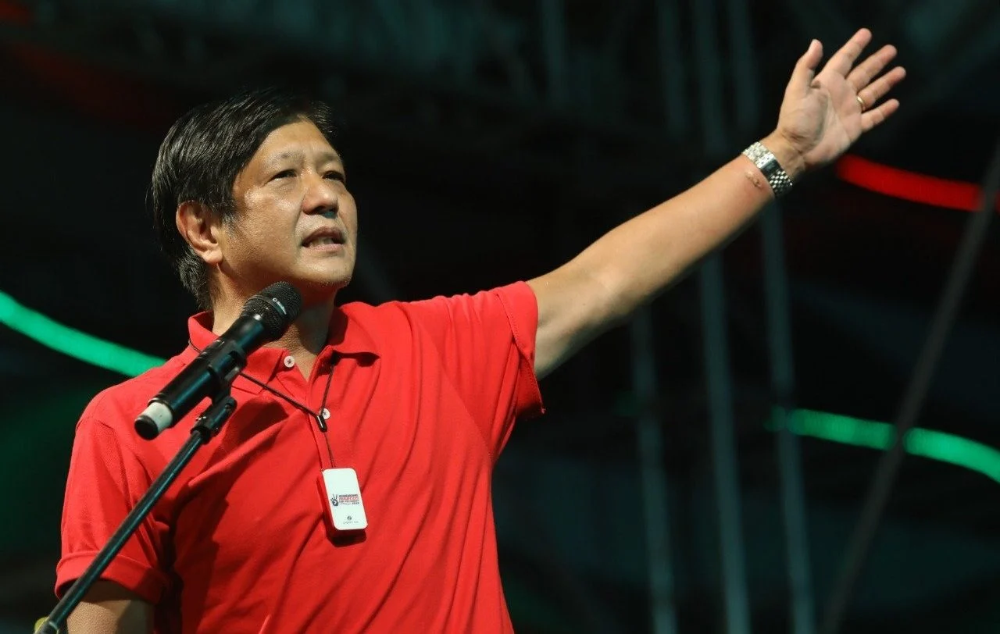
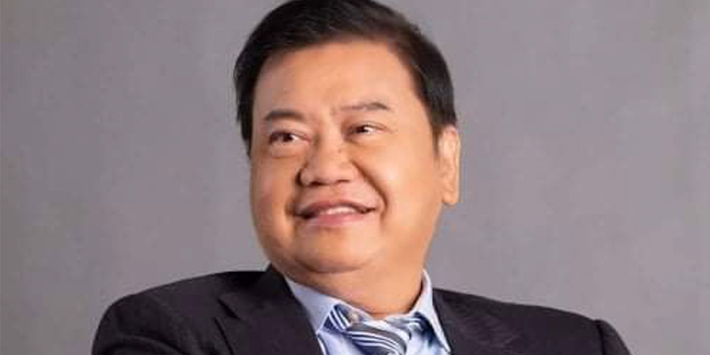
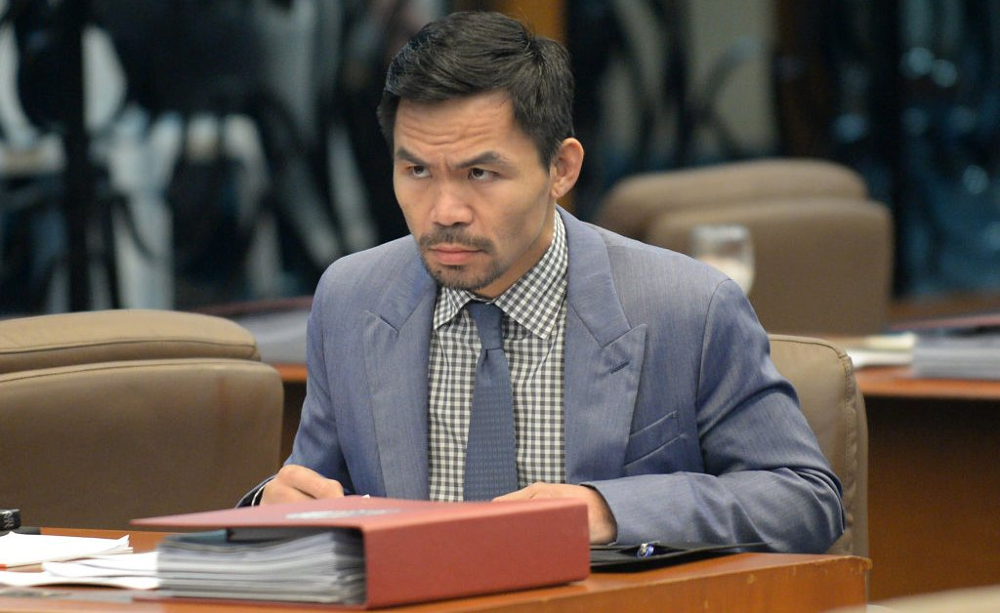
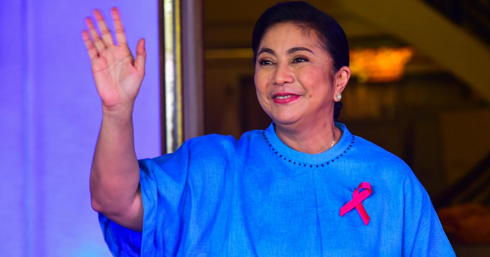

ABELLA, ERNIE
Ernie Abella, Age 72, is a businessman, author, and pastor who has long supported President Rodrigo Duterte. He also acted as the president's spokesman for a short time.
He is running as an independent candidate, with the goal of increasing the engagement of regular individuals and small business owners in governance, as well as improving access to food and healthcare for children and the elderly.
Know More!

DE GUZMAN, LEODY
Leody de Guzman, 61, is a labor activist who has advocated for laws to protect workers' rights and welfare since 1984. He stood for senator in 2019 under the slogan "Manggagawa Naman," however he was unsuccessful. He is presently the head of the Bukluran ng Manggagawang Pilipino, a socialist labor center and militant trade union federation.
He is running under the opposition alliance Laban ng Masa on a progressive and worker-centric platform based on a thorough overhaul of the country's political system to stimulate social development and, eventually, economic growth.
Know More!

DOMAGOSO, ISKO MORENO
Francisco "Isko Moreno" Domagoso is the current mayor of Manila. After serving as deputy mayor of the capital city from 2007 to 2016, he campaigned for senator but was unsuccessful. President Rodrigo Duterte then named him as chairman of the board of the North Luzon Railways Corporation, and then as undersecretary at the Department of Social Welfare and Development.
Similar to Duterte in 2016, Moreno is campaigning on a platform of "duplicating" his local projects on a national level. These projects include socialized housing, modernized public school education and continuing the administration's anti-drug campaign.
Know More!

GONZALES, NORBERTO
Norberto B. Gonzales, 74, is a self-described democratic-socialist whose long career includes activism and union organization, peace talks negotiations, and positions as national security adviser, defense secretary, and presidential chief of staff under Gloria Macapagal-Arroyo. He is the chairman of the Philippine Democratic Socialist Party, which has its roots in the 1970s protest movement and has engaged in mass demonstrations against the Marcos dictatorship, peace talks with the Moro National Liberation Front, and the overthrow of President Joseph Ejercito Estrada.
As a surprise candidate for the 2022 presidential election, Gonzales frames many of the issues faced by the country as matters of national security, including food security and the COVID-19 pandemic. He vows to prioritize reform of the agricultural sector to boost food production and increase farmers’ income.
Know More!

LACSON, PING
Ping Lacson, 73, has spent more than 40 years in the legislative and executive branches of government. He is now serving his third Senate term.
Lacson is the author of several contentious bills, including the Anti-Terrorism Act of 2020, the Philippine Identification System Act of 2018, and the Reproductive Health Act of 2011. He has long been a budget inspector, urging the removal of pork barrel and other dubious insertions during plenary Senate deliberations.
If elected, Lacson vows to restore public trust in government by improving the country's pandemic response, purging the bureaucracy of corrupt officials, and allowing local governments more autonomy.
Know More!

MANGONDATO, FAISAL
Faisal Mangondato is a businessman who is running as the standard-bearer of the Katipunan ng Kamalayang Kayumanggi party. He was born in Ramain Ditsaan, Lanao del Sur, and currently resides in Marawi City.
He launched a failed bid for regional governor of Autonomous Region in Muslim Mindanao as an independent in 2016. Three years later, in 2019, he sought a Senate seat in 2019 but did not garner enough votes to win.
Know More!

MARCOS, BONGBONG
Ferdinand “Bongbong” Marcos Jr., 64, son and namesake of the late ousted dictator, was elected unopposed into vice gubernatorial seats in Ilocos Norte at the height of his fathers regime in 1980, and eventually into congressional seats representing the same province after his familys return to the Philippines in 1991. He also served as a senator from 2010 to 2016 before losing a bid for higher office to Vice President Leni Robredo in the 2016 elections.
Marcos is campaigning on improving the country's pandemic response and continuing the Duterte administration's anti-insurgency campaign as well as its bloody campaign against illegal drugs but with a focus on prevention, education, and rehabilitation.
Know More!

MONTEMAYOR, JOSE JR.
Jose Montemayor Jr. works primarily as a cardiologist at major hospitals. He claims to bring a medical, legal and economics background to the presidential race and his first campaign for public office.
He is campaigning on a 10-point agenda to address COVID-19, eliminate corruption, improve the campaign against illegal drugs, achieve full employment, alleviate poverty and attain economic prosperity. His agenda also includes a holistic approach to the West Philippine Sea, the welfare of migrant Filipinos, press freedom, education, negotiations with rebel groups and advancements in agriculture and infrastructure.
Know More!

PACQUIAO, MANNY
Manny Pacquiao is a Philippine legislator who has served in both chambers of Congress since 2010. He first gained acclaim as a world-class champion boxer and juggled his careers as a public official and athlete until 2021 when he announced his retirement from the sport. The boxer-turned-legislator is also a preacher and founded the church Word for Everyone Ministries International, Inc. in 2012.
Pacquiao is campaigning on ridding the country of corruption, criminality, and poverty, though he has not published any concrete policy proposals as of this writing.
Know More!

ROBREDO, LENI
Leni Robredo, 56, is currently serving as the 14th vice president of the Philippines. Her office has garnered the highest audit rating from the Commission on Audit for three consecutive years (2018-2020) and has been recognized by Malacañang for its pandemic response programs across the country.
In her lone term in the House of Representatives, Robredo principally authored three bills that were signed into law, including the Tax Incentives Management and Transparency Act.
If elected, Robredo says she will spend her first 100 days in office strengthening the country’s response to the coronavirus pandemic.
Know More!